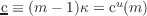
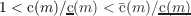
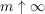
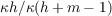

17This limiting result requires that we impose the FHWC(), because the perfect
foresight consumption function is not defined if . Informally, the proof is as follows. Define
 as the consumption function for the unemployed consumer who will receive no future
labor income. Then, and so . In the limit as ,
however, human wealth accounts for an arbitrarily small proportion  of consumption, so
 so the precautionary motive captured by vanishes.
so the precautionary motive captured by vanishes.